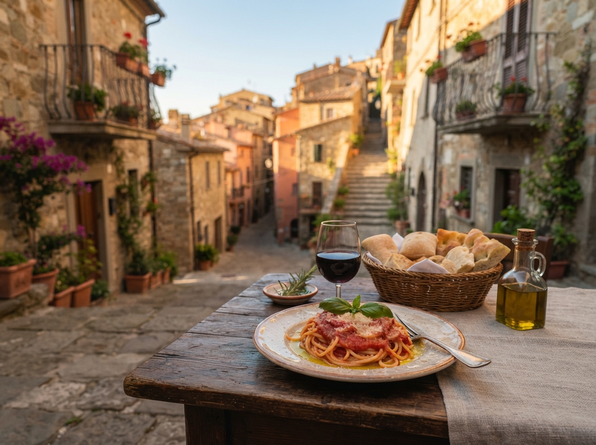

Kuchnia włoska opiera się na prostocie: kilku dobrych, sezonowych składnikach, oliwie z oliwek i umiejętnym doborze smaków. Nie ma jednej "włoskiej kuchni", bo każdy region ma własne tradycje. Na północy częściej używa się masła, ryżu i kukurydzianej polenty, a na południu oliwy, pomidorów i makaronów.
Odrobina historii
Włochy jako jedno państwo istnieją dopiero od 1861 roku, dlatego kuchnia rozwijała się lokalnie, w miastach i regionach. Pomidor trafił do Europy z Ameryki w XVI wieku i przez długi czas był uważany za roślinę ozdobną, a na szeroką skalę zaczął się pojawiać w kuchni dopiero w XVIII wieku. Popularna opowieść o tym, że makaron przywiózł z Chin Marco Polo, jest mitem, bo makaron znano we Włoszech wcześniej.
Pizzę wiąże się z Neapolem, a według legendy margherita powstała w 1889 roku na cześć królowej Małgorzaty Sabaudzkiej. Jej barwy mają przypominać włoską flagę. Neapolitańska sztuka wypieku pizzy została wpisana na listę UNESCO.
Typowe dania
- Spaghetti pomodoro: makaron z sosem z pomidorów, czosnku i bazylii
- Pizza margherita: cienkie ciasto, sos pomidorowy, mozzarella i bazylia
- Risotto: ryż gotowany powoli na bulionie, typowy dla północy kraju
- Lasagne: warstwy makaronu, sosu i beszamelu zapiekane w piekarniku
- Tiramisu: deser z kawą, mascarpone i biszkoptami
Typowe składniki
Oliwa z oliwek, pomidory, bazylia, czosnek, mozzarella i parmezan. Parmezan (Parmigiano Reggiano) pochodzi z regionu Emilia-Romagna.